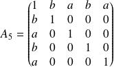
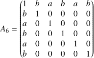
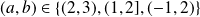
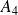

Sujet PC 2016-21 : Matrices
Le sujet est téléchargeable ci-dessous.
Soient
 et
et
 deux réels et
deux réels et
 un entier naturel supérieur ou égal à 2.
un entier naturel supérieur ou égal à 2.
On considère les matrices
de
dont tous les coefficients sont nuls sauf les termes diagonaux qui sont égaux à 1, de plus les termes de la première ligne et la première colonne (non diagonaux) sont alternativement égaux à
et à
.
On a par exemple pour et :
 ,  .
Question
1. Que peut-on dire de ces matrices ?
Question
2. Écrire une fonction Python de paramètres
,
et
qui renvoie la matrice
.
Penser à utiliser les fonctions de la synthèse sur le calcul matriciel.
def An(a, b, n):
An = np.eye(n)
for c in range(1, n):
An[0, c] = (c % 2) * b + ((c + 1) % 2) * a
for l in range(1, n):
An[l, 0] = (l % 2) * b + ((l + 1) % 2) * a
return(An)
Question
3. Calculer les valeurs propres et le déterminant des matrices pour et  .
liste_n = list(range(3, 8))
liste_ab = [(2, 3), (1, 2), (-1, 2)]
for n in liste_n :
for ab in liste_ab :
A = An(ab[0], ab[1], n)
print('A{}{} :\n Valeurs propres : \n{}\n Déterminant : {}\n'\
.format(n, ab, alg.eigvals(A), alg.det(A)))
A3(2, 3) :
Valeurs propres :
[ 4.60555128 -2.60555128 1. ]
Déterminant : -12.000000000000005
A3(1, 2) :
Valeurs propres :
[ 3.23606798 -1.23606798 1. ]
Déterminant : -3.999999999999999
A3(-1, 2) :
Valeurs propres :
[ 3.23606798 -1.23606798 1. ]
Déterminant : -3.999999999999999
A4(2, 3) :
Valeurs propres :
[ 5.69041576 -3.69041576 1. 1. ]
Déterminant : -21.00000000000001
A4(1, 2) :
Valeurs propres :
[ 4. -2. 1. 1.]
Déterminant : -7.999999999999995
A4(-1, 2) :
Valeurs propres :
[ 4. -2. 1. 1.]
Déterminant : -7.999999999999995
A5(2, 3) :
Valeurs propres :
[ 6.09901951 -4.09901951 1. 1. 1. ]
Déterminant : -25.000000000000007
A5(1, 2) :
Valeurs propres :
[ 4.16227766+0.00000000e+00j -2.16227766+0.00000000e+00j
1. +0.00000000e+00j 1. +6.67566452e-17j
1. -6.67566452e-17j]
Déterminant : -8.999999999999993
A5(-1, 2) :
Valeurs propres :
[ 4.16227766+0.00000000e+00j -2.16227766+0.00000000e+00j
1. +0.00000000e+00j 1. +6.67566452e-17j
1. -6.67566452e-17j]
Déterminant : -8.999999999999993
A6(2, 3) :
Valeurs propres :
[ 6.91607978 -4.91607978 1. 1. 1. 1. ]
Déterminant : -34.00000000000001
A6(1, 2) :
Valeurs propres :
[ 4.74165739 -2.74165739 1. 1. 1. 1. ]
Déterminant : -12.99999999999999
A6(-1, 2) :
Valeurs propres :
[ 4.74165739 -2.74165739 1. 1. 1. 1. ]
Déterminant : -12.99999999999999
A7(2, 3) :
Valeurs propres :
[ 7.244998+0.00000000e+00j -5.244998+0.00000000e+00j
1. +0.00000000e+00j 1. +0.00000000e+00j
1. +5.36757166e-17j 1. -5.36757166e-17j
1. +0.00000000e+00j]
Déterminant : -38.000000000000014
A7(1, 2) :
Valeurs propres :
[ 4.87298335 -2.87298335 1. 1. 1. 1.
1. ]Déterminant : -13.999999999999984
A7(-1, 2) :
Valeurs propres :
[ 4.87298335 -2.87298335 1. 1. 1. 1.
1. ]Déterminant : -13.999999999999984
Certaines valeurs propres sont données sous la forme de complexes avec des parties imaginaires très proches de zéro. Je les interprète comme des erreurs d'arrondis numériques et je les supprime. De plus les déterminants sont des réels très proches de valeurs entières, je les affiche comme des entiers.
Voici les résultats sous la forme d'un tableau.
Matrice | Valeurs propres | Déterminant |
A3(2, 3) | 4.60555128 -2.60555128 1. | -12 |
A3(1, 2) | 3.23606798 -1.23606798 1. | -4 |
A3(-1, 2) | 3.23606798 -1.23606798 1. | -4 |
A4(2, 3) | 5.69041576 -3.69041576 1. 1. | -21 |
A4(1, 2) | 4. -2. 1. 1. | -8 |
A4(-1, 2) | 4. -2. 1. 1. | -8 |
A5(2, 3) | 6.09901951 -4.09901951 1. 1. 1. | -25 |
A5(1, 2) | 4.16227766 -2.16227766 1. 1. 1. | -9 |
A5(-1, 2) | 6.91607978 -4.91607978 1. 1. 1. 1. | -34 |
A6(2, 3) | 6.91607978 -4.91607978 1. 1. 1. 1. | -34 |
A6(1, 2) | 4.74165739 -2.74165739 1. 1. 1. 1. | -13 |
A6(-1, 2) | 4.74165739 -2.74165739 1. 1. 1. 1. | -13 |
A7(2, 3) | 7.244998 -5.244998 1. 1. 1. 1. 1. | -38 |
A7(1, 2) | 4.87298335 -2.87298335 1. 1. 1. 1. 1. | -14 |
A7(-1, 2) | 4.87298335 -2.87298335 1. 1. 1. 1. 1. | -14 |
Certaines valeurs propres sont données sous la forme de complexes avec des parties imaginaires très proches de zéro. Je les interprète comme des erreurs d'arrondis numériques et je les supprime. De plus les déterminants sont des réels très proches de valeurs entières, je les affiche comme des entiers.
Question
4. Calculer les valeurs propres et le déterminant dans le cas général.
Question
5. Donner une base de vecteurs propres de l'espace propre associé à la valeur propre multiple.
Question
6. Dans cette question on suppose que .
Après avoir calculé quelques cas particuliers à l'aide d'un logiciel, donner une base de vecteurs propres de

suivant les valeurs de
et de
.
Question
7. La matrice est-elle toujours diagonalisable dans le cas où
et
sont des complexes ?